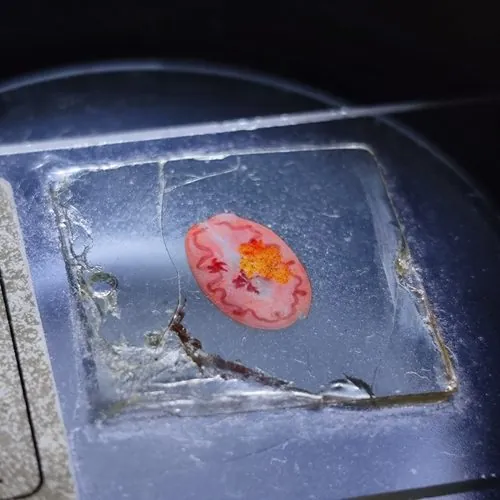

其他无脊椎动物 · 动物界
卫氏并殖吸虫 Paragonimus westermani

寄生在人和猫科动物肺部的吸虫，体形肥厚如咖啡豆，人因生食溪蟹、蝲蛄而感染，会出现咳嗽和铁锈色痰。
- 分类
- 门扁形动物门纲吸虫纲目复殖目科并殖科属并殖属
- 栖息环境
- 人和猫、犬等动物的肺脏，幼虫阶段寄生于淡水螺与溪蟹、蝲蛄
- 地理分布
- 东亚与东南亚，中国浙江、福建、安徽、辽宁等地山区溪流
- 保护级别
- 暂无评估
物种志
卫氏并殖吸虫成虫体长7–12毫米，宽4–6毫米，身体肥厚，呈咖啡豆状，体表密布小棘。它的两个睾丸并列在身体后部，卵巢与睾丸相对排列，“并殖”之名即由此而来。
虫卵随痰或粪便排出，在水中孵出毛蚴，毛蚴钻入川卷螺等淡水螺，经胞蚴、雷蚴发育成尾蚴；尾蚴离开螺体后侵入溪蟹或蝲蛄，在肌肉中形成囊蚴。人若生食或半生食溪蟹、醉蟹、腌蟹和蝲蛄，或饮用含囊蚴的生水，就会感染。童虫穿过肠壁、腹腔和膈肌进入肺脏，在肺内形成囊肿并发育为成虫，引起咳嗽、胸痛、铁锈色痰，部分童虫还会游走到皮下、眼或脑，形成游走性结节。预防要彻底煮熟蟹虾、不喝生水、生熟分开，疫区居民应定期检查。
形态与习性
- 体长7–12毫米，身体肥厚，形似咖啡豆
- 并列器官卵巢与睾丸并列，故名并殖吸虫
- 第一中间宿主川卷螺等淡水螺
- 第二中间宿主溪蟹与蝲蛄
- 感染途径生食溪蟹、醉蟹、蝲蛄，或饮用含囊蚴的生水
- 症状咳嗽、胸痛、铁锈色痰，可有游走性皮下结节
- 防护蟹虾彻底煮熟、不饮生水、生熟分开
趣味知识
- 它肥厚的身体像一颗咖啡豆，表面长满小棘。
- 人吃生蟹、醉蟹时，囊蚴就跟着进了肚子。
- 感染后咳嗽时，会咳出铁锈色的痰。